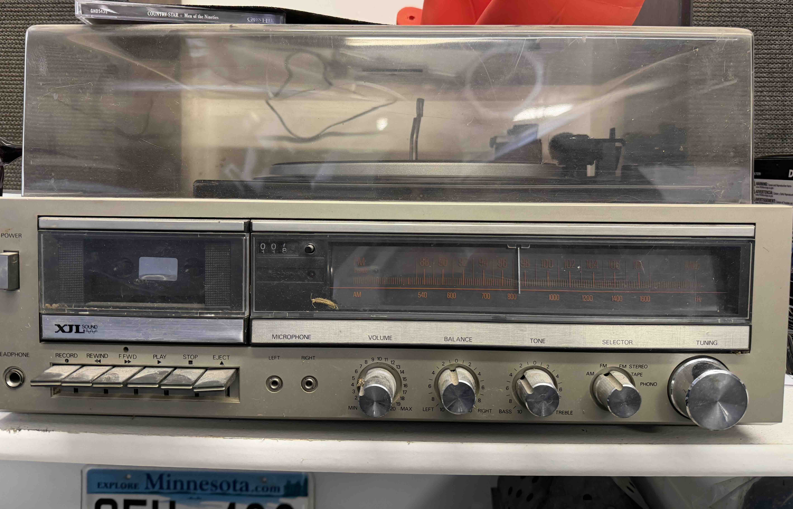
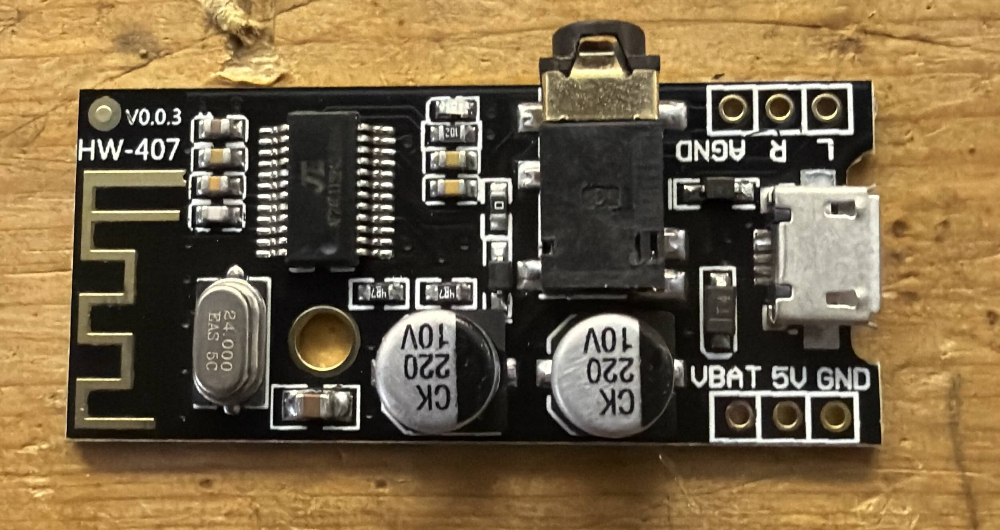
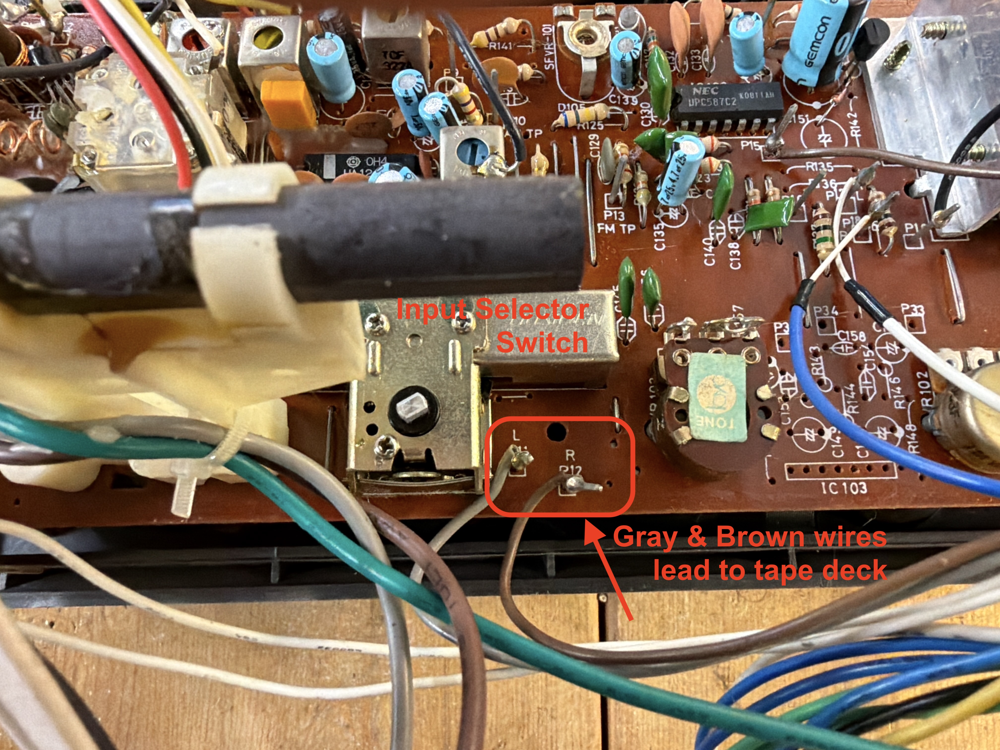
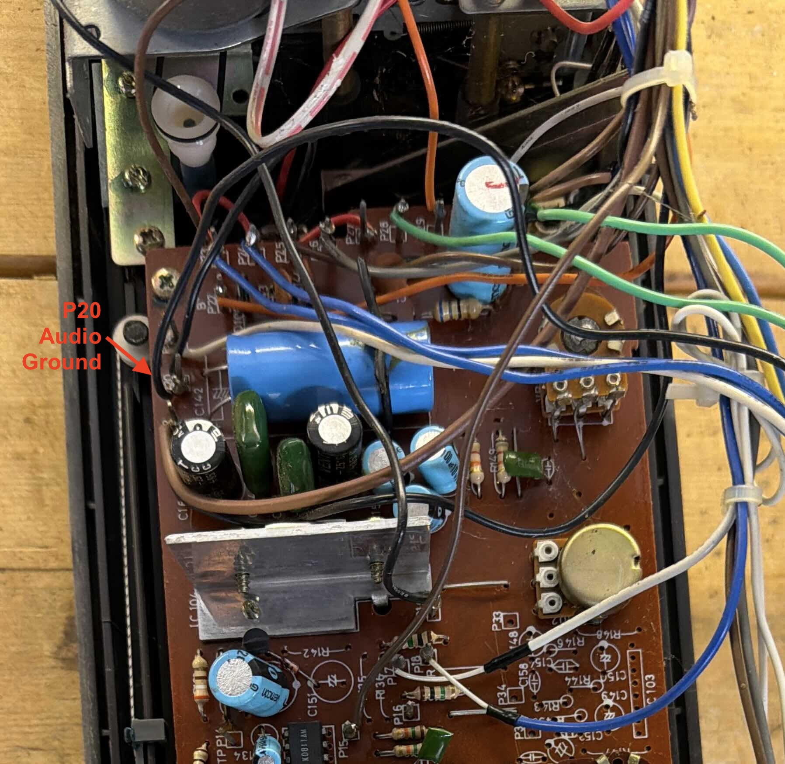
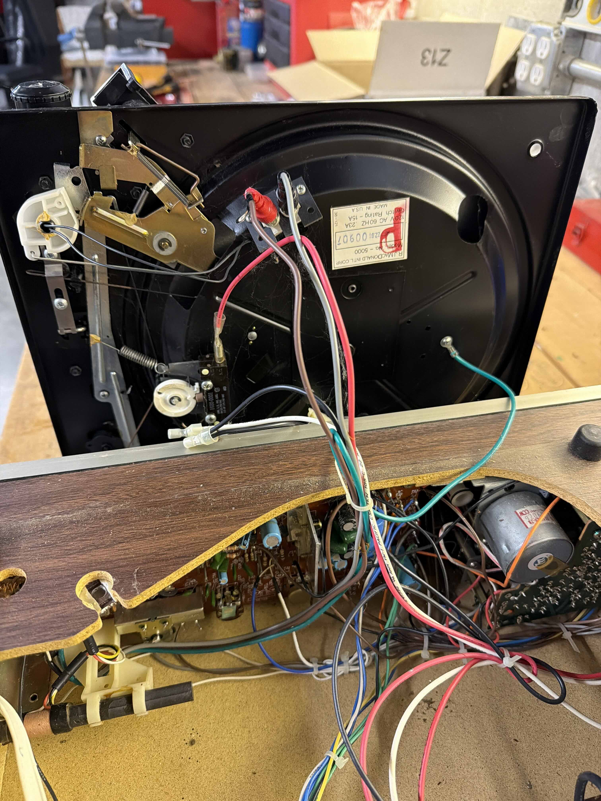
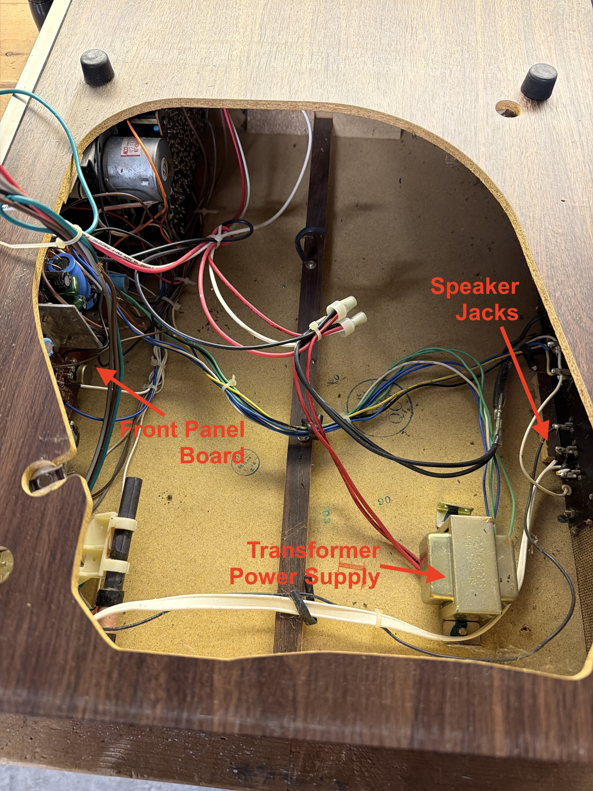
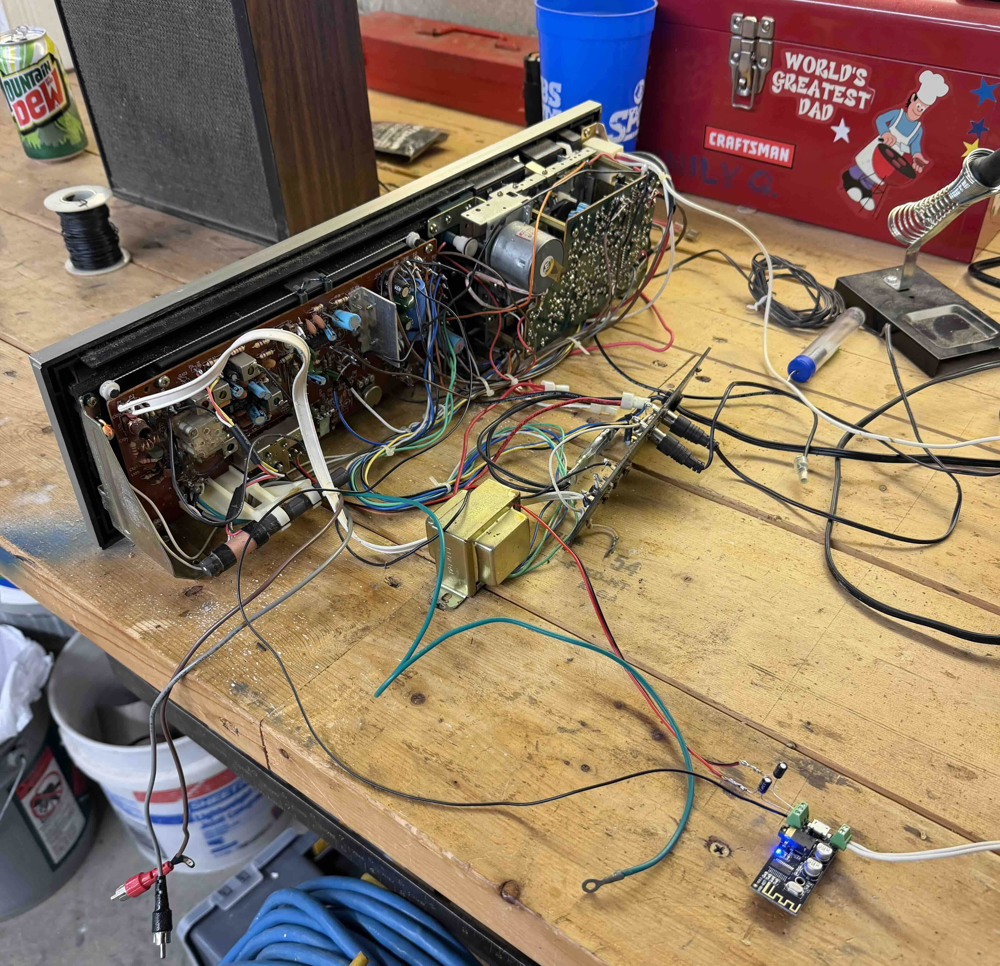
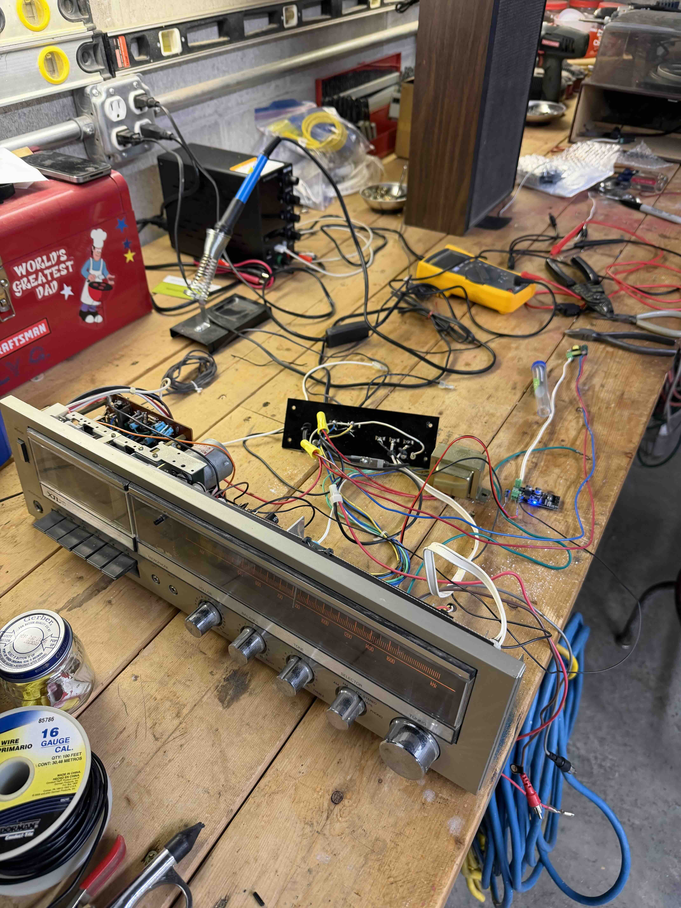

Restore it
Clean and lubricate the mechanical parts and keep the original stereo working.
My first electronics project
I restored a mid-century stereo, learned how its audio circuit worked, and added Bluetooth without changing how it looked from the outside.
assets/final-stereo.jpgWhy I started
I found an old stereo that needed a lot of work. At first, I only wanted to clean it, lubricate the record changer, and see if I could get it working again.
Cleaning and lubricating it took far longer than I expected, but I did not mind. The more time I spent with it, the more I appreciated how carefully it had been designed and built.
Once the stereo worked again, I wanted to make it useful with modern devices. I started researching how to add Bluetooth audio. I had never done anything like this before, so I had to learn one step at a time.
I ordered a small Bluetooth receiver and a 5 V power supply. Then I learned how to trace an audio signal, find the correct solder points, and reduce power-supply noise with capacitors.
This project taught me that a complicated problem becomes manageable when I break it into smaller parts and keep moving forward.
The project
Clean and lubricate the mechanical parts and keep the original stereo working.
Learn how the selector, preamplifier, volume controls, and amplifier were connected.
Feed a modern stereo signal into the original amplifier without changing the front panel.
Avoid cutting the cabinet or making changes that could not be undone later.
The receiver
The stereo combines a turntable, cassette deck, AM/FM radio, source selector, tone controls, and power amplifier in one cabinet.
The circuit boards are mostly through-hole construction, which made them easier for a beginner to inspect and solder than a modern surface-mount board.
The most difficult part was not soldering. It was figuring out where the Bluetooth audio should enter the circuit so the original volume, balance, tone, and amplifier controls would still work.

Parts and tools
| Part | What to look for | Why it matters |
|---|---|---|
| Bluetooth audio receiver | 5 V input, stereo line-level L/R outputs, exposed ground pad | It must provide an audio signal, not a speaker-level amplified output. |
| 5 V power supply | Regulated, low-noise, isolated if connected to mains | Bluetooth boards can add hum or digital noise when powered poorly. |
| Coupling capacitors | 1 to 4.7 µF, one per channel | They can block DC between the Bluetooth board and the stereo input. |
| Filter capacitors | 100 to 470 µF electrolytic plus 0.1 µF ceramic | They reduce ripple and high-frequency noise on the 5 V supply. |
| Hookup wire | Small stranded wire, preferably twisted or shielded for audio | Short, paired wiring helps reduce hum and interference. |
| Mounting materials | Plastic standoffs, heat-shrink tubing, cable ties | The board should not touch the metal chassis or moving parts. |
| Tools | Multimeter, soldering iron, solder, cutters, small screwdrivers | A multimeter was essential for checking voltage, continuity, and ground. |
I looked for a board with clearly labeled L, R, and AGND solder pads. I also wanted a module that ran directly from 5 V and reconnected automatically after power-up.
Avoid boards intended only to drive speakers. The stereo already has an amplifier, so the Bluetooth board should provide a line-level signal.
I used a regulated 5 V supply instead of guessing that an internal wire was safe. The supply needs enough current for the Bluetooth board and should produce very little ripple or switching noise.
For initial testing, a USB power bank or current-limited bench supply is a good way to separate audio problems from power-supply problems.
Finding the connection points

The Bluetooth board needs a clean, regulated 5 V supply. I used a separate AC-to-5 V module rather than trying to power it from an unknown point inside the stereo.
The module should be isolated if it connects directly to mains voltage. Its output should be checked with a multimeter before connecting the Bluetooth board.
media/5v-power-supply.jpgThe receiver board has solder points near the source-selector mechanism marked P11 / L and P12 / R. These are the TAPE line-level audio inputs. Since I did not have any cassette tapes, I chose to use this input for Bluetooth audio.
The brown and gray wires traced to the tape deck's line-level output. I used a multimeter and followed the board traces to verify that these points were in the TAPE audio path.
On my stereo, the selector switch connects the audio pathway while the cassette play button separately closes a switch for the tape-drive motor. This meant the TAPE audio input was active whenever selected, but the motor only ran when PLAY was pressed.
I connected the Bluetooth signal ground to a confirmed signal-ground point rather than to an arbitrary piece of metal. P20 / AGND had several wires connected to it and served as the board's audio signal ground. I confirmed it by checking continuity to the outer shield connection of the RCA-style speaker jacks.


L
R
AGND
P11 / L
P12 / R
P20 / Audio signal ground
Build journal
Before unplugging wires or moving boards, I took pictures from several angles. This gave me a reference when I could not remember where a connector or wire bundle belonged.
I removed old grease, cleaned the mechanism, lubricated moving parts, and made sure the turntable and receiver worked before adding anything new.
I powered the module from a known 5 V source, paired my phone, and confirmed that both left and right channels produced audio.
I followed the traces around the source selector and looked for labeled audio points. I found P11/L and P12/R near the selector mechanism.
I used continuity tests and voltage measurements to make sure the points were part of the signal path and did not carry an unsafe DC voltage.
Before permanently soldering anything, I connected the Bluetooth left, right, and ground leads temporarily and tested the stereo at low volume.
The first setup produced unwanted noise. I learned that power-supply filtering and grounding matter as much as the audio connection. I added capacitors near the Bluetooth module and kept the audio wires short.
Once the signal was clean, I soldered the audio wires to the verified points and insulated every exposed connection with heat-shrink tubing.
I placed the Bluetooth module where its antenna was not blocked by the metal chassis. I kept it away from the transformer, motor wiring, and moving parts.
After the Bluetooth input worked, I tested the radio, cassette, turntable, balance, tone, and volume controls to make sure I had not broken anything else.
What I learned
Photos and labels saved me when I forgot where wires and connectors had been routed.
When I changed several things at once, troubleshooting became much harder.
Chassis ground, power ground, and signal ground may connect differently. Measuring is better than assuming.
A circuit can work electrically and still sound bad because of ripple, switching noise, or a ground loop.
Mechanical linkages and aged wiring are easy to damage. Moving slowly usually saved time.
I did not understand the whole system at first. I learned enough to solve one problem, then moved to the next.
Project photos




assets/final-wiring.jpgassets/final-stereo.jpgLooking back
Every time I solved one problem, another appeared. The record changer would not cycle. Then the amplifier hummed. Then the Bluetooth module added noise. Each problem forced me to learn something new.
I could not understand the whole project at once, but I could understand the next wire, the next measurement, and the next test. Eventually, the stereo that had been sitting unused was playing music from my phone.